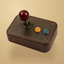
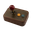
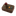
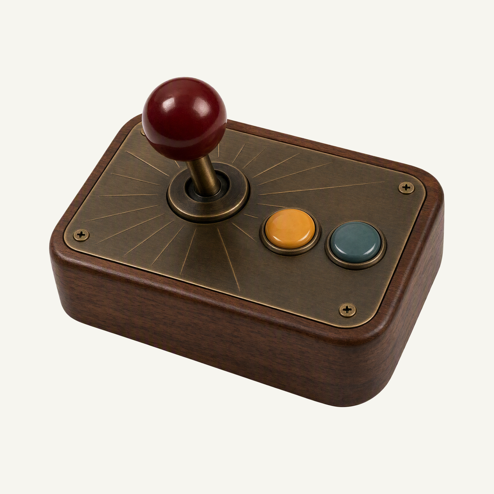
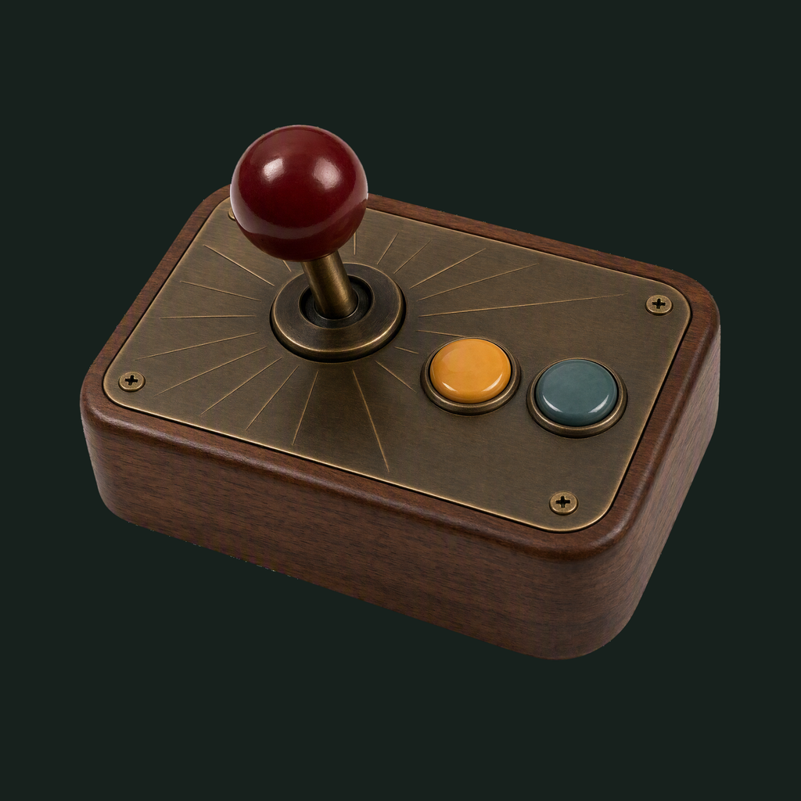

01 / Composition
A tactile move
A short ball-top joystick leans from a compact walnut arcade box. Its two close buttons and thick housing form one complete, comfortably inset assembly.
Physical-object family · Refined identity
A little arcade, with a prairie soul.
Adopted redesign · finishing 02
Native 2048 × 2048

01 / Composition
A short ball-top joystick leans from a compact walnut arcade box. Its two close buttons and thick housing form one complete, comfortably inset assembly.
02 / Drawing
Real wood grain and engraved aged brass give the prairie shooter a handmade arcade identity. The deep-red joystick leads, supported by one close ochre-and-teal button group.
03 / Presentation
A low rising sun with short prairie grass cuts and concentric joystick-like arcs in warm sand paper. The field, grain and contact shadow are independent of transparent app marks.
Presentation tiles at 128/64 px; transparent artwork for small app and browser marks.



At 128/64 px, the red joystick, two buttons and wood block remain clear. At 32/24/16 px, the compact silhouette and dominant colors carry recognition; fine material detail, printed marks and background lines naturally merge.
A designed background, with colors sampled from the exact native artwork.
Select a swatch to copy its hex value. Artwork colors and platform system colors are documented separately.
One transparent foreground, checked on two contrasting backgrounds.


Azure Foundry · gpt-image-2 · one request · native 2048 × 2048
Loading study text…
Approved material study: physical-render quality and clean isolated edges only, not block geometry or checker colors. Owner presentation board: tactile material and balanced offset framing; backdrop composed separately. Owner presentation detail: refined tonal contrast and quiet relief; never copy another project's motif.


{kind=link}
{kind=link}
{kind=link}
{kind=link}
{kind=link}